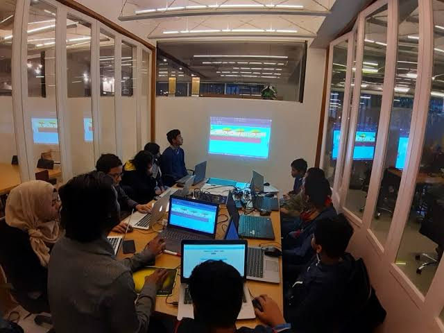

POPULAR BLOG POST:
You are here: Home / How To Get Paid For Coding
Years ago, when freelancing or working for yourself was still rather unorthodox, it was a lot harder to find work. I know, because I am a freelancer and I’ve been at this for years.
That’s true of almost any freelance career path from writing and transcription to coding and web design.
But today, if you know where to look and how to market yourself you can make a living doing coding work from anywhere – and a decent one at that. Gone are the days where you are forced to sit in a confined cubicle, plugging monotonously away at a cheap, company-issued keyboard while staring like a zombie into a bright screen.
And you want to know the best part? You can find telecommute and remote work opportunities that involve just about any project or application in the development world.
From the comfort of your home office – or a coffee shop even – you can work on games, desktop software, mobile applications, websites, web apps and much more.
If you can code it, chances are you can do it from anywhere. Of course, the important question then becomes how to find this kind of work. And once you find a client or two, how can you be sure the income is sustainable and doesn’t just suddenly disappear?
That’s precisely what we’re going to explore here. If you’ve ever wondered how you can work for yourself on your own time coding what you want to, then keep reading.
What’s the one thing you need every time you apply to a new job or opportunity, even in the conventional workforce? You need a resume and a cover letter or some variation of those two items.
Well, for freelance work, you’ll constantly be applying to new opportunities and potential projects. Rather than creating a new resume from scratch every time or sending the same boring document, try building and hosting an online portfolio for yourself. Consider it an online resume that will be used to market you, your skills and your experience.
You don’t want to spend too much time bragging about yourself. Instead, highlight your achievements and progress in the coding and development world. Share the projects and campaigns you’ve been apart of. Post testimonials from previous employers, colleagues or managers. Show off some of your skills by offering a demo or sample piece of your work.
Every time you apply for a new opportunity, you can direct the recruiter to your online portfolio. If it has to do with web design or web development, you’ll even get bonus points for having setup your own portal. It’s a win-win that you don’t want to pass up.
Every time you apply for a new opportunity, you can direct the recruiter to your online portfolio. If it has to do with web design or web development, you’ll even get bonus points for having setup your own portal. It’s a win-win that you don’t want to pass up.
You’re looking for work. You’re skilled and ready to rock. So, get out there and market yourself and not just by applying to posted job offers. Talk to anyone and everyone who will listen. Network with fellow coders and developers, and reach out to some of your favorite companies or parties and show an interest in contract work.
Finding potential clients even the conventional way is not always easy.
When you solicit yourself in this way, you will be turned down a lot, and yes, you may even be ignored. It’s not the best way to boost your self-esteem, but it does achieve something. It gets the word out that you’re a free agent, and you’re looking to take on work. Structure it like a marketing or advertising campaign, but don’t forget that word-of-mouth advertising is just as good as any other kind.
Networking by spreading the word about yourself is great, but it won’t get you anywhere if no one has ever heard of you and no one can serve as a reference for you. And while your portfolio is a great place to show off some samples of your work, it’s not always representative of your work.
That’s why you need to get out there and get involved in the coding and development community. There are many ways to do this, and not all of them have to be tedious or unenjoyable. Try to find something you love doing so that even though you’re not getting paid, you’re still having fun.
This could be anything from contributing to open-source projects, to teaching coding and development courses online. Start a blog where you talk about that awesome game you’re coding in your free time. Put together some attractive and inspirational themes or plugins for WordPress or other CMS platforms. Revive that old app or software you were working on in the dark ages and release some updates.
More importantly, join a community of like-minded developers and coders and get involved. Check out community forums, social networks like Reddit, and anything else that has a thriving, active community.

The fact you’re working from home and involved in a primarily digital space doesn’t mean you should overlook the physical world. Networking is a crucial point that we’ve already discussed, and part of that is putting yourself out there and meeting new people.
You’d be surprised what the right social connection can do for you and your career. There are plenty of events and meetups for coders and developers that you can attend and participate in. More importantly, make yourself a known presence at these gatherings and be social with anyone you can. You can learn new strategies and techniques, make reliable connections, and even market yourself to potential employers.
Examples include developer meet-ups and conferences, hack or codathons, education courses and community get-togethers.
If you come away from this only remembering a single piece of advice, let it be this one. Never, ever stop coding or practicing your work. Yes, marketing yourself and finding new opportunities takes a lot of time. Networking has its own set of investments and requirements too. But no matter what, do everything you can to continue honing your skills and staying up to date with industry changes.
At some point, even if it’s far off from now, you’re going to have to dive back into the world, and that means getting your hands dirty all over again. You don’t want to be rusty or out of the loop when that happens.
Find side projects or personal endeavors that can help you practice and continue working on what you love. Don’t ever let it fall by the wayside.